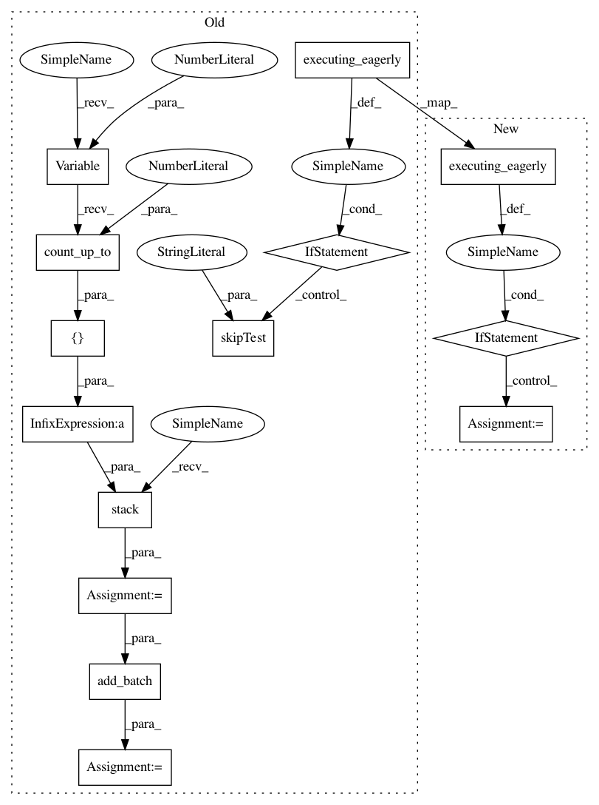

c611d9b6b35e44326bc18096dc57abe18eb6c90b,tf_agents/replay_buffers/tf_uniform_replay_buffer_test.py,TFUniformReplayBufferTest,testMultiStepStackedBatchedSampling,#TFUniformReplayBufferTest#Any#,255
Before Change
("BatchSizeFive", 5),
)
def testMultiStepStackedBatchedSampling(self, batch_size):
if tf.executing_eagerly():
self.skipTest("b/123885577")
spec = specs.TensorSpec([], tf.int32, "action")
replay_buffer = tf_uniform_replay_buffer.TFUniformReplayBuffer(
spec, batch_size=batch_size)
actions = tf.stack([tf.Variable(0).count_up_to(10)] * batch_size)
add_op = replay_buffer.add_batch(actions)
steps, _ = replay_buffer._get_next(3, num_steps=2, time_stacked=True)
self.assertEqual(steps.shape, [3, 2])
self.evaluate(tf.compat.v1.global_variables_initializer())
After Change
self.evaluate(tf.compat.v1.global_variables_initializer())
self.evaluate(add_data())
if tf.executing_eagerly():
steps = lambda: replay_buffer._get_next(3, // pylint: disable=g-long-lambda
num_steps=2,
time_stacked=True)[0]
else:
steps, _ = replay_buffer._get_next(3, num_steps=2, time_stacked=True)
self.assertEqual(self.evaluate(steps).shape, (3, 2))
for _ in range(100):
steps_ = self.evaluate(steps)
In pattern: SUPERPATTERN
Frequency: 3
Non-data size: 14
Instances
Project Name: tensorflow/agents
Commit Name: c611d9b6b35e44326bc18096dc57abe18eb6c90b
Time: 2019-02-27
Author: oars@google.com
File Name: tf_agents/replay_buffers/tf_uniform_replay_buffer_test.py
Class Name: TFUniformReplayBufferTest
Method Name: testMultiStepStackedBatchedSampling
Project Name: tensorflow/agents
Commit Name: c611d9b6b35e44326bc18096dc57abe18eb6c90b
Time: 2019-02-27
Author: oars@google.com
File Name: tf_agents/replay_buffers/tf_uniform_replay_buffer_test.py
Class Name: TFUniformReplayBufferTest
Method Name: testMultiStepSampling
Project Name: tensorflow/agents
Commit Name: c611d9b6b35e44326bc18096dc57abe18eb6c90b
Time: 2019-02-27
Author: oars@google.com
File Name: tf_agents/replay_buffers/tf_uniform_replay_buffer_test.py
Class Name: TFUniformReplayBufferTest
Method Name: testMultiStepStackedBatchedSampling
Project Name: tensorflow/agents
Commit Name: c611d9b6b35e44326bc18096dc57abe18eb6c90b
Time: 2019-02-27
Author: oars@google.com
File Name: tf_agents/replay_buffers/tf_uniform_replay_buffer_test.py
Class Name: TFUniformReplayBufferTest
Method Name: testMultiStepStackedSampling